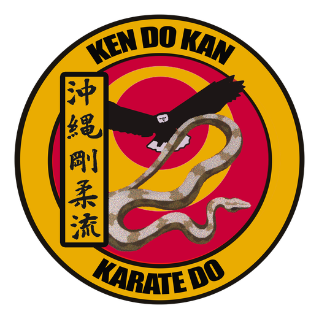

Difícil de juzgar a simple vista
Cuando dos golpes llegan casi juntos, no se puede saber con certeza cuál fue primero. Incluso al repetir la jugada, la decisión depende de quién mira y desde dónde.
Jornadas de Innovación 2026 · Magíster en Ingeniería Informática · UNAB
¿Quién conecta primero? Medición con sensores para karate.
Dos almohadillas con sensor piezoeléctrico avisan por radio a un receptor, y el receptor decide, sin depender de la mirada de nadie, quién llegó primero: Aka (rojo) o Ao (azul). Un proyecto del equipo Los Raules, construido para el dojo KenDoKan.

Esta animación explica por qué es tan difícil saber quién golpeó primero a simple vista, y cómo lo resuelve Sen Tsuki.
Animación ilustrativa con muñecos esquemáticos: los tiempos y resultados que muestra son un ejemplo, no datos medidos. Ver en YouTube.
En karate, quién conecta primero un golpe se decide en fracciones de segundo y depende de lo que alcanzan a ver los jueces.
Cuando dos golpes llegan casi juntos, no se puede saber con certeza cuál fue primero. Incluso al repetir la jugada, la decisión depende de quién mira y desde dónde.
Dos jueces pueden ver cosas distintas. Sin una medición, la discusión no tiene dónde apoyarse.
Quien entrena la velocidad y la precisión del tsuki depende de la opinión del instructor para saber si fue rápido o si acertó.
En otros deportes de combate ya se usan sensores para resolver este tipo de discusión. En taekwondo, por ejemplo, la subjetividad del puntaje generó disputas y se incorporaron protectores electrónicos con sensores inalámbricos [1]. Quisimos algo pensado para el karate, accesible, portátil y construido por nosotros.
Objetivo: que los alumnos puedan practicar velocidad y precisión con un resultado inmediato y medido, y que las exhibiciones y torneos del dojo cuenten con una referencia objetiva de quién golpeó primero.
Sen Tsuki reemplaza la apreciación visual por una medición. Es un sistema de tres partes.
Una para Aka y otra para Ao. Cada una lleva un sensor piezoeléctrico y un microcontrolador: detectan el impacto, filtran el ruido y avisan por radio.
Recibe los avisos, decide quién llegó primero y lo muestra en una pantalla. Se arma con un sensor táctil que toca el juez.
Una página lee el resultado del receptor y muestra Aka contra Ao, con puntaje, en pantalla grande para jueces y público.
Del golpe al resultado hay cuatro componentes que se hablan por radio y por cable. Estos diagramas muestran cómo se conectan y qué ocurre en una ronda.
La radio ESP-NOW conecta las almohadillas con el receptor sin router ni internet. El receptor se conecta por cable USB a un computador, que muestra el marcador.
El impacto deforma el disco piezoeléctrico pegado a la almohadilla.
El piezo genera un pulso de voltaje de pocos milisegundos. Un circuito lo protege y lo mantiene estable.
El microcontrolador lee la señal sin parar. Si supera un umbral calibrado, hay un golpe válido.
Envía por radio un mensaje de un solo carácter, A o B, al receptor.
El receptor registra el primer mensaje que llega y bloquea los siguientes.
Lo muestra en su pantalla y lo envía al marcador web, para que todo el dojo lo vea.
Desliza el diagrama hacia los lados para verlo completo.
Por qué gana el primero en llegar y no el de menor tiempo: cada placa cuenta el tiempo desde su propio encendido, así que sus relojes no son comparables. En una prueba, la diferencia entre dos placas llegó a 5681 ms. Por eso el sistema no compara horas: decide por orden de llegada al receptor.
Después de mostrar al ganador, el sensor se ignora un segundo, para que un toque accidental no borre el resultado.
La resistencia ancla el pin a tierra en reposo y el diodo Zener recorta los picos de voltaje del piezo para proteger la entrada. Los dos van en paralelo, cada uno directo del pin a tierra. Sin la resistencia, el pin queda flotando y registra "golpes" que nadie dio.
Qué beneficio buscamos para cada persona que participa en una clase, una exhibición o un torneo.
Reciben retroalimentación inmediata: ven al instante si su golpe fue el primero y si realmente impactó el blanco.
Cuentan con una referencia medida para apoyar la decisión cuando los golpes llegan casi juntos.
El resultado aparece en pantalla grande y todos lo ven al mismo tiempo, con el mismo criterio.
El sistema es portátil, no necesita internet y usa componentes comunes, así que puede llevarse a otros lugares.
Sen Tsuki no nació como una caja ni como un marcador. Empezó con una pregunta del dojo: ¿se puede saber, con un aparato, quién golpeó primero? Estas son las etapas, con fotos del proceso real.
La primera idea fue meter un sensor de vibración KY-031 dentro de una almohadilla y avisar por Bluetooth. La descartamos antes de construirla: el KY-031 solo entrega encendido o apagado, rebota y no distingue la fuerza del golpe, y la latencia de Bluetooth es poco predecible.
El cambio fue a un disco piezoeléctrico, que genera una señal proporcional al impacto, y a una comunicación por WiFi y UDP.
Tres placas ESP32 sobre la mesa: dos para las almohadillas (A y B) y una para el receptor, con una pantalla OLED que todavía decía "Presiona boton". Los dos discos piezoeléctricos se ven a los lados, y en la hoja quedaron anotadas las direcciones MAC de cada placa, necesarias para que se hablen entre sí.
Para probar la idea en un golpe real usamos paletas de foco: dentro de la palma pusimos una ESP32 con una protoboard pequeña, la resistencia y el diodo Zener. El disco piezoeléctrico (el círculo dorado) quedó en el centro de la cara de golpeo, sujeto con cinta negra.
La ESP32 DevKit funcionaba, pero era grande para ir en una almohadilla. La ESP32-C3 Super Mini es mucho más pequeña y de menor consumo, así que pasó a las almohadillas.
El cambio exigió recalibrar: su ADC se comporta distinto y la resistencia de 1 MΩ dejaba el pin flotando, por lo que se usó una de 100 kΩ.
Después pasamos a las paletas de entrenamiento del dojo, las mismas que se usan en clase. La C3 se sujeta con cinta en el extremo del mango, y un cable USB-C permite programarla y alimentarla. El parche plateado de la cara de golpeo marca la zona del sensor.
El receptor pasó por varias formas. Primero llevaba LEDs rojo y azul para mostrar al ganador, pero se comportaban de forma errática; los reemplazó una pantalla OLED. El botón, que al principio era un cable puenteado, pasó a ser un sensor táctil. Y la electrónica terminó en una caja impresa en 3D.
La primera versión del marcador era una aplicación en el computador que recibía los golpes por WiFi y UDP. La versión actual lee directamente el puerto serie del receptor desde una página web, para proyectar el resultado al público. Así el marcador quedó independiente del WiFi del lugar.
Sin la resistencia a tierra, el sensor dispara solo.
Comparar la hora de dos placas dio 5681 ms de diferencia: había que decidir por orden de llegada.
Dos partes del programa escribiendo en la pantalla a la vez la dejaron con textos mezclados.
El mismo circuito se comportó distinto en la ESP32 y en la ESP32-C3.
Qué medimos durante el desarrollo y qué pasó en una actividad real con alumnos del dojo.
Muestras reales del sensor durante el desarrollo. Con el umbral en 500, las lecturas de reposo quedan muy por debajo y los golpes medidos quedan por encima.
Barras claras: reposo. Barras oscuras: golpe. Medido por el equipo en pruebas de banco; no incluye la actividad con alumnos.
| Prueba | Resultado medido |
|---|---|
| Pin sin resistencia a tierra | Lecturas de ~1000 a 4000 sin golpear (pin flotando). |
| ESP32 con resistencia | Reposo 16–104; golpes 1313–4095. |
| Umbral 500, almohadilla A (ESP32) | 8 golpes consecutivos detectados: 650, 666, 712, 781, 896, 926, 1326 y 1466. |
| Hora de cada golpe por placa | Diferencia de 5681 ms entre placas: se descartó esta estrategia. |
| ESP32-C3 con resistencia de 1 MΩ | Pin flotando: 5 a 855 sin golpear. |
| ESP32-C3 con resistencia de 100 kΩ | Reposo 0–57; con el piezo conectado, ruido de 254 a 327 (máximo por ventana de 100 ms). |
| Actividad con alumnos | ~50 alumnos, ~250 golpes (5 por alumno), tsuki y mawashi geri. |
Almohadillas, receptor y marcador web en funcionamiento con unos 50 alumnos, cerca de 250 golpes en total. En el video se ve la actividad con un efecto de ilustración aplicado para proteger la identidad de los participantes.
Imágenes reales de la actividad, con efecto de ilustración. Ver en YouTube.
Lo que todavía no medimos: la tasa de acierto de detección de las almohadillas (cuántos golpes reales detectó y cuántos no) y las falsas detecciones en reposo. Las cifras de la actividad son aproximadas y esa medición está pendiente.
Este es un prototipo, no un sistema oficial de arbitraje.
Raúl G. Villegas Tecas
Raúl A. Esparza Landero
Ernesto E. Vivanco T.
Jornadas de Innovación 2026, Magíster en Ingeniería Informática, Universidad Andrés Bello.
Puso el escenario, a sus alumnos y a sus instructores para las pruebas.
Se usó un asistente de IA (Claude, de Anthropic) como apoyo en la programación, la depuración, la documentación y la animación explicativa. Las pruebas con el hardware y la validación del funcionamiento las realizó el equipo.